SCARA 2D Robotic Arm
Watching a robotic arm move is deceptively simple to watch and surprisingly hard to build. I set out to understand how one actually works — not just simulate it — so I designed the simplest version I could: a 2-degree-of-freedom SCARA arm that traces shapes on paper with a pen, driven by hand-derived forward and inverse kinematics. The project runs the full pipeline solo — SolidWorks CAD, Simscape/Simulink dynamics and PID control, 3D-printed hardware, and Arduino-based real-time control.
Quick specs
| Microcontroller | Arduino Nano 3.0 (ATmega328 / Atmel AVR) |
| Actuators | 2 × MG996R servo (shoulder, elbow) — 9.4 kg·cm @ 4.8V, 11 kg·cm @ 6V rated |
| Computed torque requirement | Shoulder ≈ 3 kg·cm worst-case · Elbow ≈ 0.5 kg·cm worst-case |
| Link masses | Base ≈ 105 g · Link 1 ≈ 99 g · Link 2 ≈ 84 g · servo ≈ 55 g each |
| Control architecture | 2 independent PID loops, torque-actuated Simscape revolute joints; target angle from inverse kinematics, actual angle from the Simscape model |
| Host ↔ target link | External mode over serial, COM13 @ 115200 baud — live monitoring/tuning without reflashing |
| Actuation output | Simulink Arduino Servo Write blocks, Pin 5 (shoulder), Pin 6 (elbow) |
| Trajectory library | Heart, Rectangle, Circle, Happy Face (switch-selectable in Simulink) |
| Rotation convention | Counter-clockwise (CCW) is positive |
Demonstration
The arm tracing a heart path with a pen.
What to watch for: the heart's top-center cusp is the hardest point in this whole trajectory — it's an instantaneous direction reversal, and it's exactly where the tracked path (see Results) rounds off into a small loop instead of following the notch.
Concept
A Selective Compliant Articulated Robot Arm (SCARA) is known for precision, speed, and a rigid vertical axis, paired with flexibility in the horizontal plane — which is why it's the standard choice for pick-and-place and packaging work. I picked this project because I wanted to understand how that actually works in reality. Kinematics was the one piece of my first-semester Computer-Aided Analysis of Mechanical Systems class that never quite clicked for me on paper, so I wanted to build something and find out.
The goal was straightforward on the surface: build a robotic arm. Underneath that, I wanted it to trace a simple trajectory — starting with a basic geometric shape — and see how it behaved in software versus real life. And I wanted to close the loop: control angular position with feedback through a PID controller, so the arm's real-world execution could actually match the math.
Theory — forward and inverse kinematics
The derivation below only takes some geometry — I worked through it by hand before touching MATLAB, since I wanted to actually understand the constraints, not just call a toolbox function.

Arm linkage & part design (SolidWorks)
CAD, material choice, and measured mass per part.
Base, arms, and joints all needed to be as stiff as possible — deflection here means drifting away from the ideal mathematical model and introducing mechanical error the control loop then has to fight. That said, this arm didn't need machine-shop precision; it's for learning, not production. I designed it to be easy to make and to let me test the math, which meant PLA printed on my Bambu Lab Mini. I iterated through five designs before landing on the final arm shown below.
| Component | Mass |
|---|---|
| Base | ~105 g |
| Link 1 | ~99 g |
| Link 2 | ~84 g |
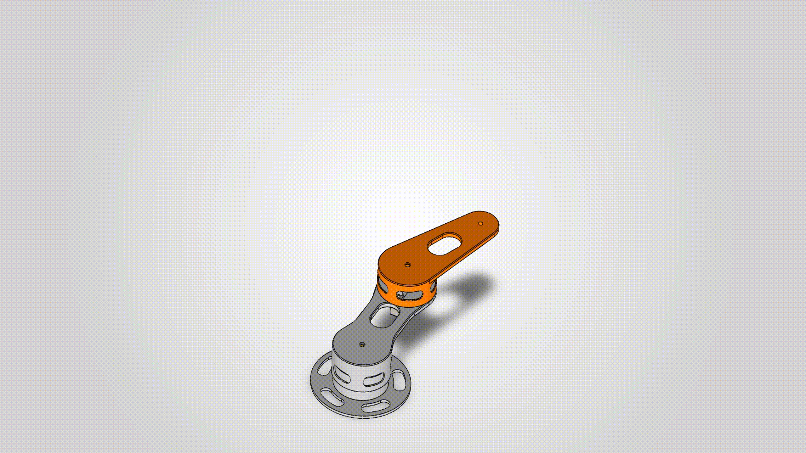
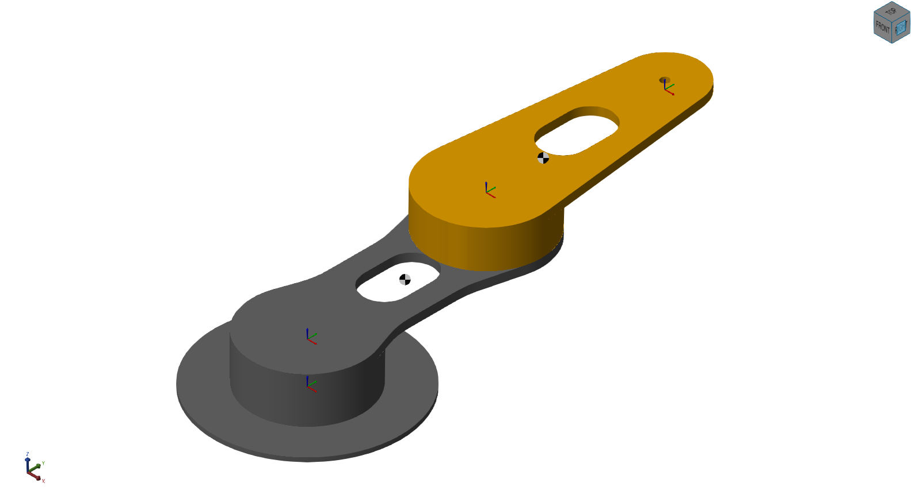
Motor selection
This arm weighs only a few hundred grams total and its only job is dragging a pen across paper, so it was never going to need much torque — but I wanted to actually check that instead of assuming it.
Worst case is the arm fully extended, straight out, since that's where every link's weight has the longest lever arm on the joint behind it. Working through the numbers — Link 1 (~99 g) at its own midpoint, the elbow servo (~55 g) sitting right at the L1/L2 joint 130 mm out, and Link 2 (~84 g) at its midpoint further still — the shoulder joint needs to hold about 3 kg·cm at worst case. The elbow joint, which only has to support Link 2, needs barely 0.5 kg·cm.
Both are comfortably inside what an MG996R can deliver — 9.4 kg·cm at 4.8V, up to 11 kg·cm at 6V — so I went with a pair of MG996Rs, one per joint, with roughly 3x margin at the shoulder and well over 10x at the elbow.
MATLAB/Simulink model — kinematic verification
Validating the math before asking any motor to do real work.
Before asking any motor to do real work, I wanted to check that the kinematics were actually right on their own. So the first Simulink model I built, RBT_SCARA, doesn't have a controller in it at all — it's a rigid body tree I constructed by hand, frame by frame, rather than importing the whole assembly from SolidWorks in one shot. A World Frame anchors a rigid transform into the Base, the Base carries another transform out to the Shoulder Joint, and the same pattern — transform, body, transform — repeats through Link 1, the Elbow Joint, and Link 2. Building it this way forced me to actually understand how the frames connect to each other, instead of trusting an import tool to get it right for me.
For this first pass, the Base was modeled as a simple cylinder and both links as simple bricks rather than the full printed geometry with its lightening holes — a deliberate simplification to keep the model fast to iterate on while I was still validating the IK math, not the final word on mass distribution.
Both joints ran in Input Motion mode at this stage: q1 and q2 — the joint angles my inverse kinematics solves for — were fed directly in as each joint's commanded position, so the simulated arm always ended up exactly where the math said it should. That's the real reason the motion looked "ideal" with no controller anywhere in the loop: position wasn't computed from forces here, it was prescribed directly.
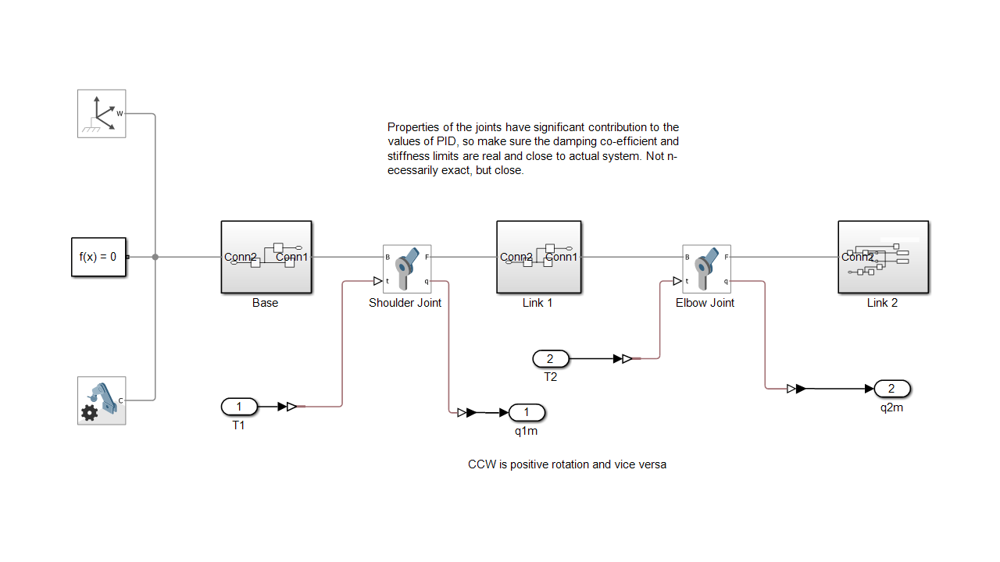
MATLAB/Simulink model, part II — closing the loop
Torque actuation, real geometry, four trajectory shapes, and a PID gain problem traced back to the plant.
With the kinematics validated, the next step was to stop prescribing the joints' motion directly and let them actually be driven by torque — the way a real motor works. That meant switching each Revolute Joint's Actuation from Input Motion to Torque (Provided by Input); Motion has to switch to Automatically Computed at the same time, since a joint can't have both a prescribed position and free dynamics at once. A PID controller then sits in the loop for each joint, comparing the inverse-kinematics-solved target angle to the joint's actual angle coming back from the model and generating the torque command that drives it there. The rigid body tree itself was also updated at this stage to carry the real imported geometry and mass properties from SolidWorks rather than the placeholder cylinder/brick approximation — it's labeled Real Part RBT in the final diagram for exactly that reason.
The final architecture also generalized past a single test path: four trajectory generators — Heart, Rectangle, Circle, and Happy Face — each built as a MATLAB Function block, feed into a manual switch so any one of them can be selected as the commanded path. That signal goes into inverse kinematics, through the two PID loops and the Real Part RBT, and back out through forward kinematics so the actual traced path (xt, yt) can be logged and compared against the commanded path (xd, yd). The two joint angles are also converted from radians to degrees (a simple 180/π gain block on each) and logged as out.Shoulder and out.Elbow, since those are the units the physical servos and the Arduino Servo library expect — degrees, not radians.
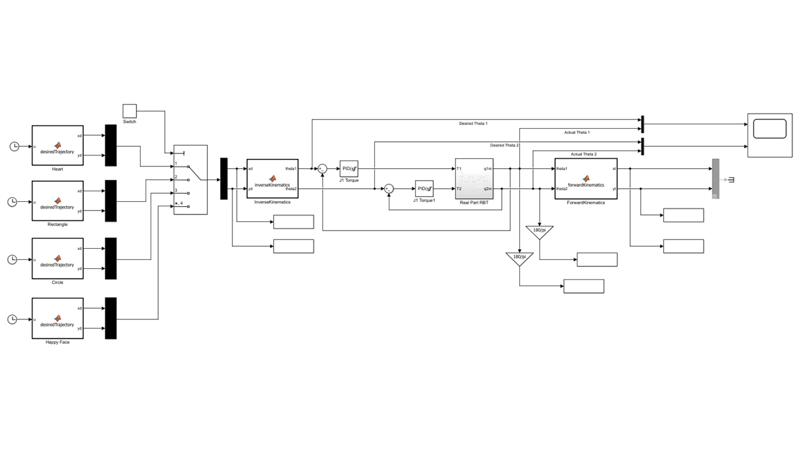
Debugging a six-figure PID gain
Getting a stable, well-behaved response out of this loop took real debugging, not just tuning. The first time I closed it, it oscillated hard — visibly, uselessly hard, the kind of fast buzzing back-and-forth that looks like the model is broken rather than just poorly tuned. MATLAB's PID autotuner didn't help either; it handed back gains in the hundreds of thousands, which isn't a real answer for a servo moving a few hundred grams a few centimeters.
Gains that implausible are usually a sign the model has a problem, not that the controller needs a fundamentally different structure, so I went looking in the plant rather than the tuner. The Simscape Revolute Joint block has a Limits section — a soft spring-damper "bump stop" meant to only engage right at the mechanical end of travel — and mine had two mistakes stacked on top of each other. The Upper Limit's Bound was set to 180 with the units left on radians instead of degrees, putting the real limit roughly 28 full turns away — effectively no limit at all. More importantly, the Lower Limit's Transition Region Width — how far before the bound the spring starts engaging — was set to π radians instead of the few-degree window it should have been. That meant the "bump stop" wasn't a bump stop; it was active across the entire 180° above the joint's zero position, acting as a second, much stiffer, badly-damped spring the PID had to fight through the joint's whole normal range of motion, everywhere, all the time.
The proof showed up directly in the joint's angular-velocity trace: instead of a clean, damped motion profile, it rang like a plucked string — a fast, barely-decaying sinusoid at what works out to several hundred hertz, well outside anything a real servo or PID loop should ever see. Chasing that also explained something that looked, at first, like an unrelated tooling bug: Simscape's Results Explorer kept opening plots zoomed into the last fraction of a second of a 10-second run, no matter how many times I reset the axes. It turned out the solver was taking so many tiny time steps to resolve that spurious high-frequency ringing that it blew straight through Simscape's default data-logging cap — so the "zoomed in" view wasn't a viewer bug at all, it was the simulation quietly telling me it was working far harder than it should have to.
The fix: narrowing the Transition Region Width back down to match the correctly-set Upper Limit, fixing the Bound's units, and zeroing out an unrelated Internal Mechanics spring left over from a default value brought the required PID gains down from six figures to something a real MG996R-class servo could plausibly execute. It's a big enough lesson that I annotated it directly on the Simulink model itself: joint damping and stiffness values need to be realistic and close to the actual physical system — not necessarily exact, but close — because the PID controller will faithfully "solve" for whatever plant it's actually given, including the parts you didn't mean to model.
Communication: simulation → hardware
Getting the closed-loop model to drive the real arm.
Once the closed-loop model behaved correctly in simulation, the next step was making the real arm move the same way. This uses the Simulink Support Package for Arduino, targeting an Arduino Nano 3.0 (Atmel AVR) directly from the Simulink Configuration Parameters — no separate firmware to hand-write.
The two PID-controlled joint angles, already converted to degrees, are wired straight into two Arduino Servo Write blocks: one on Pin 5 driving the shoulder's MG996R, one on Pin 6 driving the elbow's. That's the entire actuation path from "solved joint angle" to "physical servo command" — Simulink's generated code handles the PWM pulse generation for both servos every control step. Power for the two servos runs on its own supply through a buck converter rather than off the Nano's 5V rail, with a shared ground back to the board, since hobby servos under load can pull more current and introduce more electrical noise than the Nano's onboard regulator is meant to handle.
The other piece that made this practical to develop was External Mode. With Hardware serial port set to Serial 0 and the host COM port fixed to COM13 at 115200 baud, I can run the compiled model live on the Nano while Simulink on the PC stays connected over serial — watching signals and adjusting PID gains in real time without recompiling and reflashing the board for every small change. That turned what would otherwise be a slow flash-test-reflash loop into something closer to tuning the controller interactively.
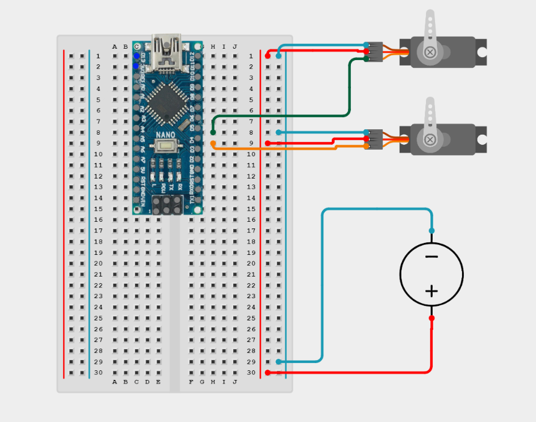
Results
Commanded vs. actual pen-tip path and joint-angle history, for each of the four trajectories.
With the closed loop working, I ran all four trajectories — Heart, Rectangle, Circle, Happy Face — and logged both the commanded pen-tip path (from inverse kinematics) and the actual path (from the dynamic simulation) so I could overlay them directly, along with the shoulder and elbow joint-angle histories behind each one.
Circle
This is the strongest result of the four. The actual path sits almost exactly on top of the commanded one for the full loop, with one small, localized exception: right where the arm passes closest to full extension, the actual path breaks into a small hook-shaped deviation before rejoining the circle. That's the kinematic singularity showing up exactly where the math predicts it should — the inverse-kinematics Jacobian gets ill-conditioned near full reach, so small position errors turn into disproportionately large angle commands right at that one spot. The joint-angle plot backs this up: smooth, sinusoidal motion for both joints, with only a brief wobble in the first fraction of a second before settling in.
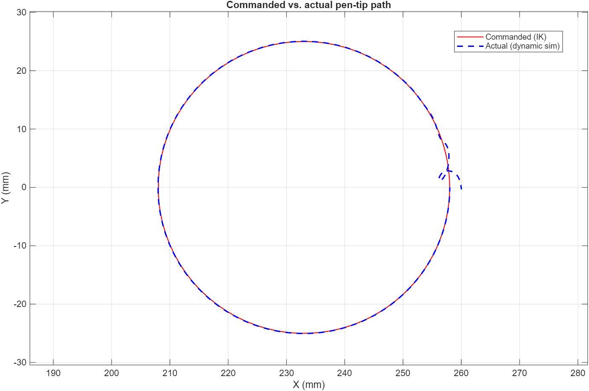
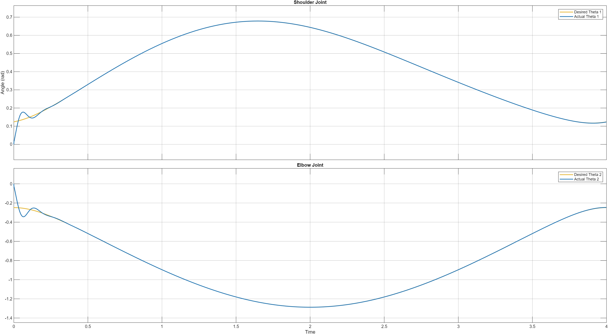
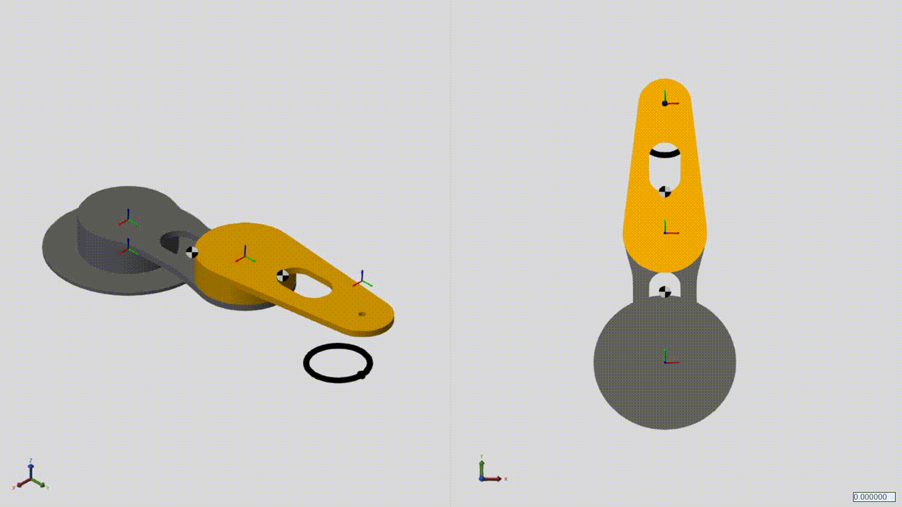
Rectangle
This is still the clearest unresolved problem. The commanded path is a clean rounded rectangle, but the actual path swings roughly 13 mm past the intended bottom edge and loops before recovering onto the rest of the rectangle. That's consistent with what I expected: asking the arm to reverse direction almost instantaneously at a sharp corner isn't something a real (or simulated) actuator can do, and the controller has to fight its way back onto the path afterward rather than smoothly following it. The joint-angle plot shows a sharper, messier initial transient than the circle's before it settles — a signature of the same problem. The corner-blending fix discussed for the trajectory generator hasn't been reflected in this run yet; this plot is the "before," not the "after."
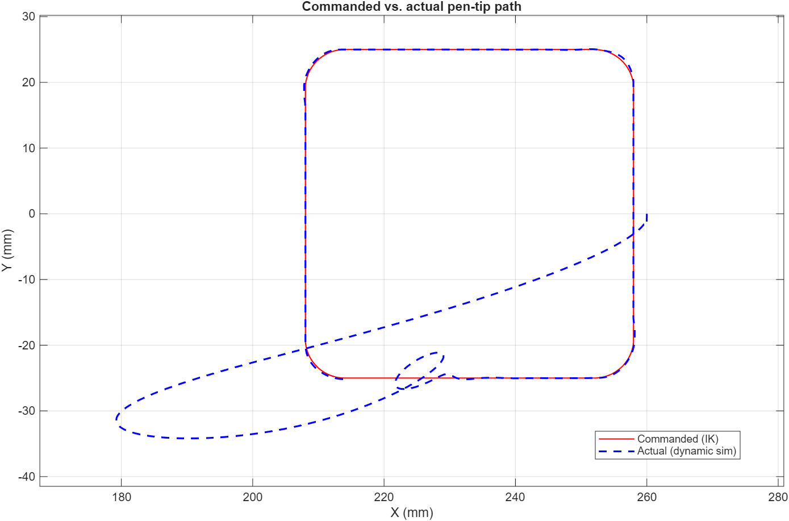
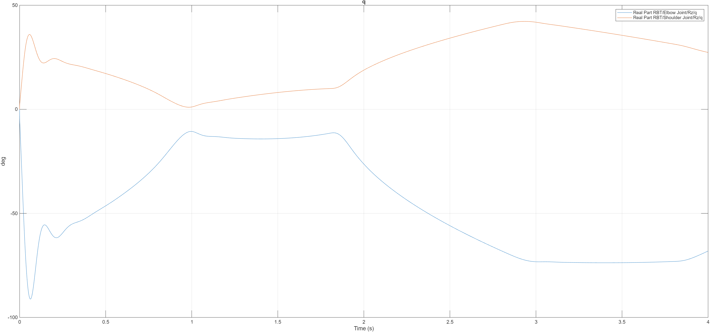
Heart
A related but softer version of the rectangle's problem. Most of the outline — both lower lobes and the bottom point — tracks well, but right at the heart's cusp (the sharp inward notch at the top-center, which is its own kind of instantaneous direction reversal) the actual path rounds off into a small loop instead of following the notch, and drifts slightly inside the commanded path along the upper-left lobe before recovering. Same underlying cause as the rectangle — a sharp direction change the controller can't track instantaneously — just less severe here because the heart's cusp is a smaller, gentler reversal than the rectangle's 90° corners.
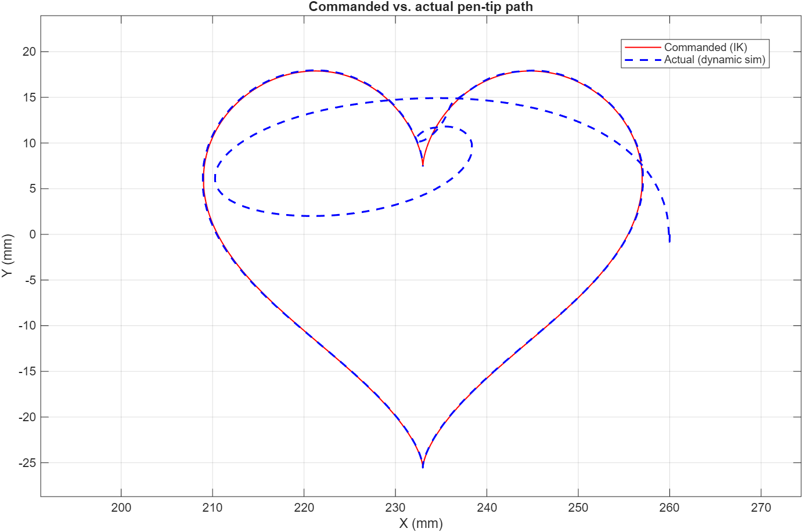
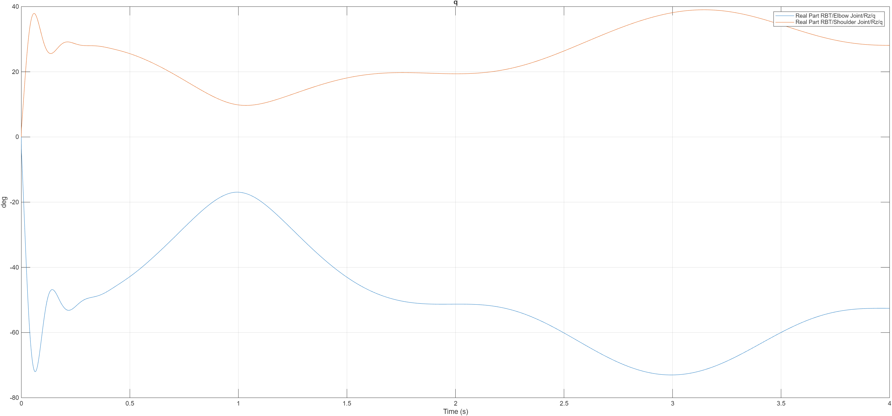
Lessons learned
- Look at the plant before the tuner. When a PID loop asks for six-figure gains to behave, the controller isn't broken — the model handed to it almost certainly is. In this case an oversized joint-limit Transition Region Width and a units mismatch were quietly adding a second, badly-damped spring to the system; no amount of retuning was ever going to fix that, because the controller was correctly compensating for a plant that didn't match reality.
- Joint properties aren't a formality. Damping coefficients and stiffness limits feed directly into how believable the PID response is — they don't need to be exact, but they need to be in the right neighborhood of the real system, or every downstream control decision is being tuned against a fictional plant.
- A "tooling bug" is sometimes a symptom. The Results Explorer view that wouldn't reset to the full simulation time span looked like a plotting quirk at first. It was actually the simulation trying to tell me its solver was taking orders of magnitude more time steps than it should have — which turned out to be the same root cause as the PID gains.
- A clean result on one shape doesn't mean the pipeline is done. The circle tracked almost perfectly; the rectangle and heart, run through the exact same control loop, exposed a real and repeatable path-planning gap at sharp direction changes. Testing against more than one trajectory shape is what surfaced that — a single "it works" demo would have missed it entirely.
What's next
The immediate next steps are the corner-blending / cusp-easing fix at the trajectory-generation level (confirmed necessary by the rectangle and heart results above) and getting real position feedback from the physical servos into the loop, since right now the PID trusts the simulated joint angle rather than a measured one. Beyond that: expanding past the current four-shape library, and possibly adding a third degree of freedom so the arm isn't confined to a single horizontal plane.
Files & downloads
Simulink models, CAD, and source material.